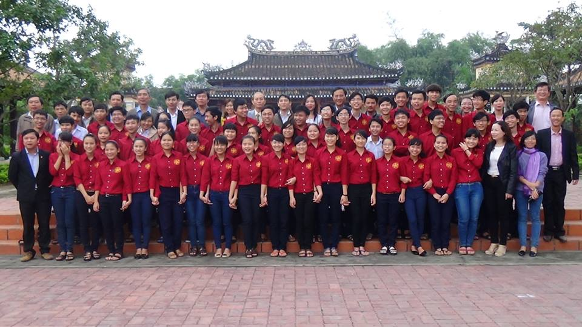

Kết quả kỳ thi chọn học sinh giỏi quốc gia lớp 12 THPT năm 2015

Lần cập nhật cuối lúc Thứ hai, 09 Tháng 2 2015 08:24 Viết bởi Administrator Thứ năm, 05 Tháng 2 2015 13:54
Trong toàn tỉnh có tổng số 27 giải quốc gia, số lượng giải của Trường THPT chuyên Nguyễn Bỉnh Khiêm đạt 21 giải.

Dưới đây là thống kế số lượng giải học sinh giỏi quốc gia chuyên Nguyễn Bỉnh Khiêm năm 2014 như sau:
|
DANH SÁCH HỌC SINH ĐẠT GIẢI HỌC SINH GIỎI QUỐC GIA NĂM 2015
TRƯỜNG THPT CHUYÊN NGUYỄN BỈNH KHIÊM
|
|||||||||||||||||||||||||||||||||||||||||||||||||||||||||||||||||||||||||||||||||||||||||||||||||||||||||||||||||||||||||||||||||||||||||||||||||||||||||||||||||
Thông tin chi tiết kết quả kỳ thi học sinh giỏi năm 2015 của tỉnh Quảng Nam tại đây.
Thông tin chi tiết kết quả kỳ thi học sinh giỏi năm 2015 của cả nước tại đây.
Tin mới hơn:
- 04/11/2015 10:05 - Danh sách học sinh được tham gia bồi dưỡng thi HSG…
- 29/08/2015 08:55 - Thầy và trò trường THPT chuyên Nguyễn Bỉnh Khiêm c…
- 31/07/2015 09:22 - Hướng dẫn làm hồ sơ xét tuyển Đại học - Cao đẳng 2…
- 29/04/2015 16:09 - Đội tuyển HSG môn lịch sử Quảng Nam đạt tỉ lệ giải…
- 01/04/2015 19:46 - Hướng dẫn tổ chức thi THPT quốc gia và xét công n…
Tin cũ hơn:
- 10/12/2014 00:00 - Từ chuyến đi Hội thảo Vĩnh Phúc
- 13/11/2014 07:42 - Trường THPT chuyên Nguyễn Bỉnh Khiêm - Quảng Nam t…
- 30/10/2014 10:32 - Đại hội Đoàn trường THPT chuyên Nguyễn Bỉnh Khiêm …
- 05/09/2014 00:00 - Trường THPT chuyên Nguyễn Bỉnh Khiêm tổ chức lễ kh…
- 15/03/2014 08:05 - Kết quả chung kết hùng biện Tiếng Anh tại trường T…